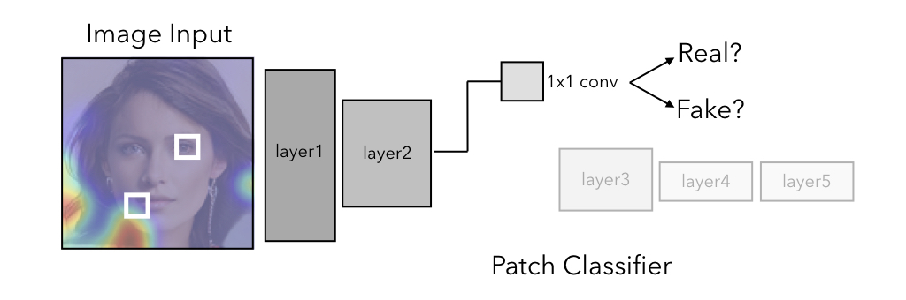
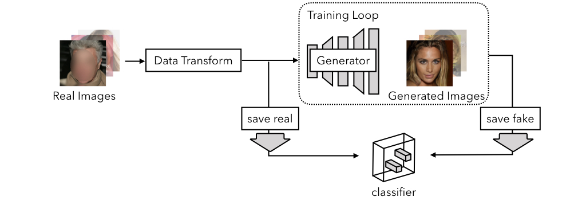
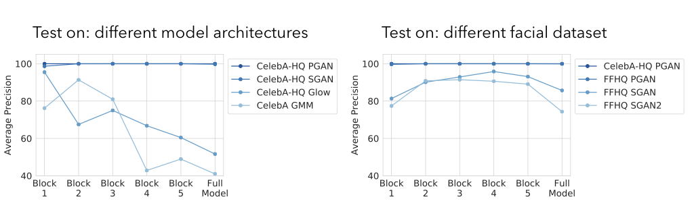
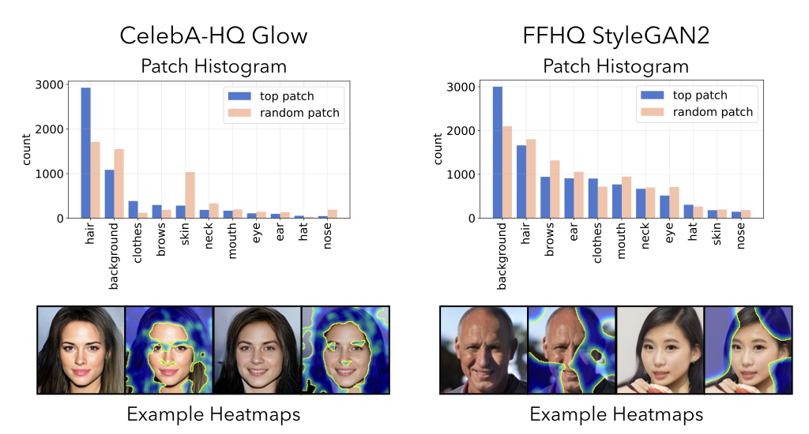
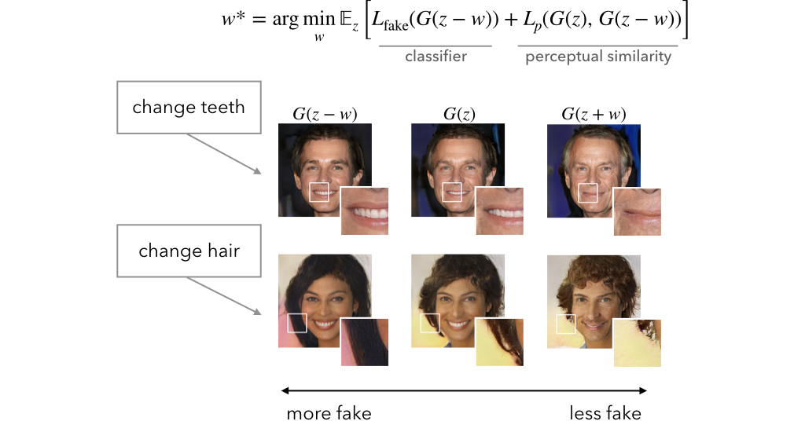

What makes fake images detectable?
Understanding properties that generalize
Lucy Chai
David Bau
Ser-Nam Lim
Phillip Isola
MIT Computer Science and Artificial Intelligence Laboratory
[Paper]
[Code]

The quality of image generation and manipulation is reaching impressive levels, making it increasingly difficult for a human to distinguish between what is real and what is fake. However, deep networks can still pick up on the subtle artifacts in these doctored images. We seek to understand what properties of fake images make them detectable and identify what generalizes across different model architectures, datasets, and variations in training. We use a patch-based classifier with limited receptive fields to visualize which regions of fake images are more easily detectable. We further show a technique to exaggerate these detectable properties and demonstrate that, even when the image generator is adversarially finetuned against a fake image classifier, it still leaves detectable artifacts in certain image patches.
A Brief Summary:
We train classifiers in a fully convolutional manner by truncating a standard deep network architecture after various intermediate layers. This classifier is trained to distinguish between real images and fake or manipulated images, but since it is fully convolutional, it provides us with a prediction of how "real" or "fake" it predicts a given patch of the image to be. One subtle caveat was that we had to be careful with image preprocessing -- we tried to create our dataset so that "real" and "fake" image collections are as similar as possible in terms any resizing done and file format, as we found that a classifier could easily learn these differences rather than the actual task.

We train the classifier on fake faces from Progressive GAN, and real faces from the CelebA-HQ dataset after performing the preprocessing steps above. We then evaluate the truncated classifiers at different receptive field sizes, where higher block number corresponds to larger receptive field/larger patch size, across different synthetic face generators, as well as generators trained on the more diverse FFHQ face datset. Oftentimes, a model with a smaller receptive field can outperform one with a larger receptive field on this task.

Patch-based predictors give use a natural way to visualize model decisions, as the same model weights are applied over each patch in a sliding fashion. By using a pretrained face segmentation model, we can categorize the most predictive patch in each image to investigate what types of features the patch classifier uses in making a decision.

One of the dangers of image synthesis is that the generators are constantly evolving and getting better, so we investigate how patch cues change as a result of changes in the generator. We finetune the generator and recompute the most predictive patches, and we also use the generator as a tool to exaggerate what makes images look fake by optimizing against the classifier in latent space.

Reference
L Chai, D Bau, SN Lim, P Isola. What makes fake images detectable? Understanding properties that generalize.
European Conference on Computer Vision, 2020.
@inproceedings{patchforensics,
title={What makes fake images detectable? Understanding properties that generalize},
author={Chai, Lucy and Bau, David and Lim, Ser-Nam and Isola, Phillip},
booktitle={European Conference on Computer Vision},
year={2020}
}
Acknowledgements:
We would like to thank Antonio Torralba, Jonas Wulff, Jacob Huh, Harry Yang, and Richard Zhang for helpful discussions. This work was supported by a National Science Foundation Graduate Research Fellowship under Grant No. 1122374 to L.C. and DARPA XAI FA8750-18-C000-4 to D.B.
Recycling a familiar template.